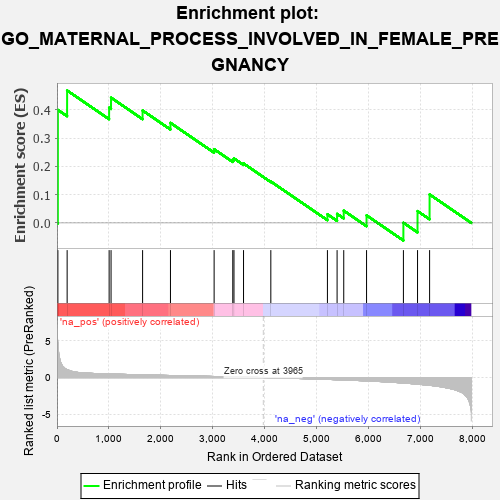
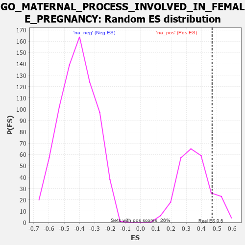

| | | Dataset | 7d |
| Phenotype | NoPhenotypeAvailable |
| Upregulated in class | na_pos |
| GeneSet | GO_MATERNAL_PROCESS_INVOLVED_IN_FEMALE_PREGNANCY |
| Enrichment Score (ES) | 0.46850228 |
| Normalized Enrichment Score (NES) | 1.3371634 |
| Nominal p-value | 0.13953489 |
| FDR q-value | 0.3941233 |
| FWER p-Value | 1.0 |
Table: GSEA Results Summary

Fig 1: Enrichment plot: GO_MATERNAL_PROCESS_INVOLVED_IN_FEMALE_PREGNANCY
Profile of the Running ES Score & Positions of GeneSet Members on the Rank Ordered List
| PROBE | GENE SYMBOL | GENE_TITLE | RANK IN GENE LIST | RANK METRIC SCORE | RUNNING ES | CORE ENRICHMENT | | 1 | HMX3 | | | 17 | 4.775 | 0.3999 | Yes |
| 2 | TPPP3 | | | 195 | 1.079 | 0.4685 | Yes |
| 3 | MEN1 | | | 1003 | 0.483 | 0.4077 | No |
| 4 | AKT1 | | | 1040 | 0.476 | 0.4432 | No |
| 5 | RXRA | | | 1647 | 0.365 | 0.3978 | No |
| 6 | UBE2A | | | 2183 | 0.278 | 0.3540 | No |
| 7 | WNT4 | | | 3023 | 0.146 | 0.2608 | No |
| 8 | PPAT | | | 3382 | 0.091 | 0.2235 | No |
| 9 | MED1 | | | 3405 | 0.089 | 0.2282 | No |
| 10 | MAPK3 | | | 3589 | 0.062 | 0.2104 | No |
| 11 | MTOR | | | 4114 | -0.025 | 0.1465 | No |
| 12 | ASH1L | | | 5203 | -0.248 | 0.0306 | No |
| 13 | PRDX3 | | | 5389 | -0.293 | 0.0320 | No |
| 14 | VDR | | | 5517 | -0.325 | 0.0434 | No |
| 15 | PRDM1 | | | 5956 | -0.457 | 0.0268 | No |
| 16 | TMED2 | | | 6665 | -0.746 | 0.0006 | No |
| 17 | GHSR | | | 6937 | -0.894 | 0.0418 | No |
| 18 | AR | | | 7169 | -1.046 | 0.1008 | No |
Table: GSEA details [plain text format]

Fig 2: GO_MATERNAL_PROCESS_INVOLVED_IN_FEMALE_PREGNANCY: Random ES distribution
Gene set null distribution of ES for GO_MATERNAL_PROCESS_INVOLVED_IN_FEMALE_PREGNANCY